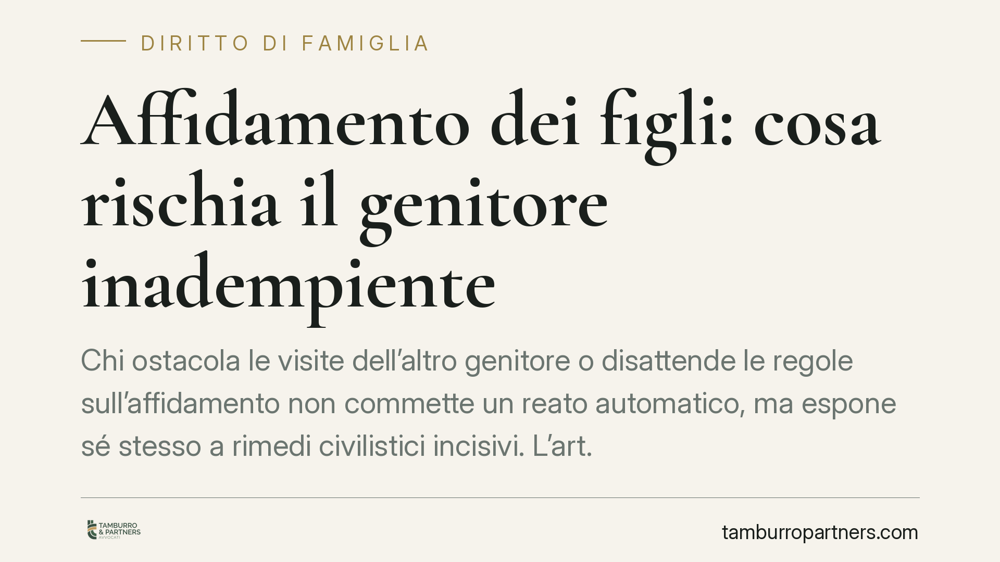

Affidamento dei figli: cosa rischia il genitore inadempiente
Chi ostacola le visite dell'altro genitore o disattende le regole sull'affidamento non commette un reato automatico, ma espone sé stesso a rimedi civilistici incisivi. L'art. 473-bis.39 del codice di procedura civile, introdotto dalla riforma Cartabia, offre al giudice un ventaglio di strumenti pensati per rendere effettivi i provvedimenti nell'interesse del minore. Vediamo come funzionano e cosa rischia concretamente il genitore inadempiente.

Il quadro normativo
La riforma del processo civile (d.lgs. 149/2022) ha riunito la materia della famiglia in un procedimento unitario e ha concentrato nell'art. 473-bis.39 c.p.c. i rimedi contro le violazioni dei provvedimenti sull'affidamento e sulla responsabilità genitoriale.
La norma riprende e aggiorna il contenuto del previgente art. 709-ter c.p.c., oggi abrogato. Rispetto al passato, il legislatore ha mantenuto l'impianto sanzionatorio ma lo ha inserito nel nuovo rito, precisando competenze e presupposti. È bene chiarire subito un punto: non si tratta di sanzioni penali. L'art. 473-bis.39 opera interamente sul piano civilistico, con una finalità di effettività, cioè di far rispettare concretamente quanto deciso dal giudice nell'interesse del figlio minore.
I quattro strumenti del giudice
In presenza di gravi inadempienze o di atti che arrechino pregiudizio al minore oppure ostacolino il corretto svolgimento dell'affidamento, il giudice può adottare, anche congiuntamente, quattro misure.
L'ammonizione. È il richiamo formale al genitore inadempiente. Ha natura di avvertimento e spesso precede misure più incisive.
La sanzione pecuniaria in favore della Cassa delle ammende. Ha funzione punitiva. Secondo la lettera della norma, l'importo è compreso tra un minimo e un massimo edittale (indicativamente da 75 a 5.000 euro; l'ammontare preciso va verificato alla luce del testo vigente e degli eventuali aggiornamenti). Colpisce il comportamento in sé, a prescindere da un danno concreto.
L'astreinte. È la condanna al pagamento di una somma di denaro per ogni violazione o inosservanza successiva, oppure per ogni giorno di ritardo nell'esecuzione del provvedimento. Ha natura coercitiva: non punisce il passato né ripara un danno, ma spinge il genitore a conformarsi in futuro, rendendo economicamente svantaggiosa la persistenza nell'inadempimento.
Il risarcimento del danno. Ha funzione riparatoria. Può essere disposto a carico del genitore inadempiente in favore dell'altro genitore o del minore, per compensare il pregiudizio effettivamente subito.
La distinzione funzionale è decisiva: astreinte (coercizione verso il futuro), sanzione (punizione del comportamento), risarcimento (riparazione del danno). I tre piani sono autonomi e, in linea di principio, cumulabili tra loro.
Il rapporto con il profilo penale
I rimedi civilistici non escludono una possibile rilevanza penale. Quando l'inadempimento assume le forme della elusione dolosa di un provvedimento del giudice in materia di affidamento, può configurarsi il reato di mancata esecuzione dolosa di un provvedimento del giudice (art. 388 c.p.), che resta su un binario distinto e autonomo rispetto alle misure dell'art. 473-bis.39 c.p.c.
Trattandosi di una disposizione recente, la giurisprudenza di legittimità consolidata è ancora limitata. La giurisprudenza di merito tende a utilizzare questi strumenti in chiave graduata e proporzionata, privilegiando le misure meno afflittive quando sufficienti a ripristinare il rispetto del provvedimento.
Cosa cambia per i genitori
Per il genitore che subisce l'inadempimento, la norma offre leve concrete per reagire senza dover attendere esiti incerti. Per il genitore inadempiente, al contrario, il rischio economico è reale e può sommarsi su più fronti.
Un aspetto spesso trascurato: anche condotte apparentemente difensive possono essere lette come inadempienze. Rifiutare le visite adducendo presunti pregiudizi non verificati, o modificare unilateralmente gli accordi, espone chi agisce alle stesse misure che intenderebbe invocare contro l'altro.
Cosa fare in concreto
- Documentate ogni violazione in modo oggettivo: date, orari mancati, comunicazioni scritte, mancati rientri. La prova dell'inadempimento è il presupposto di ogni rimedio.
- Evitate reazioni speculari: non rispondete a un inadempimento con un contro-inadempimento, perché indebolisce la vostra posizione e vi espone alle medesime sanzioni.
- Individuate lo strumento proporzionato al caso: l'astreinte serve a ottenere il rispetto futuro, il risarcimento a riparare un danno già subito. Non sono alternativi, ma rispondono a esigenze diverse.
- Valutate la rilevanza penale solo quando l'elusione del provvedimento appare dolosa e grave, tenendo presente l'autonomia tra i due piani.
- È opportuno un confronto preliminare con un legale per individuare la misura più adeguata ed evitare iniziative controproducenti nel procedimento.
Ogni famiglia ha il suo equilibrio.
Separazione, divorzio, affidamento, assegno: se vuoi un confronto riservato su una specifica situazione, scrivi allo studio. Ti rispondiamo entro un giorno lavorativo.